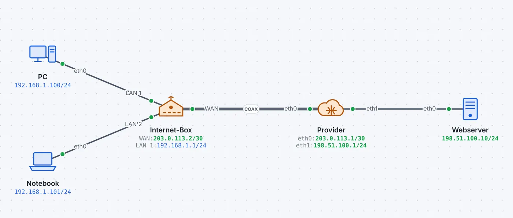
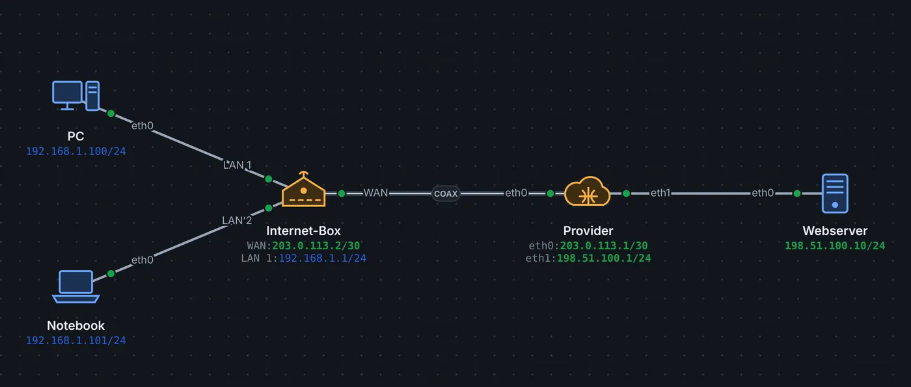

Zwischen Haus und Provider liegt die «letzte Meile». Je nach Ort ist das ein Koaxkabel des Kabelnetzes, eine Glasfaser, die alte Telefonleitung oder Funk. Jede Technik baut den Anschluss anders auf; das Modem (oder die Internet-Box) übernimmt das.
Technik
Leitung
Ablauf beim Aufbau
DOCSIS 3.1 (Kabel)
Koax
Kanal suchen, Ranging, DHCP und Konfigurationsdatei per TFTP, Registrierung
Verbindung zur Zelle, Anmeldung mit SIM, Bearer mit IP-Adresse
Geteilte Medien
Bei Kabel und GPON teilen sich viele Kunden dasselbe Medium. Darum muss sich jedes Modem anmelden und bekommt Sendezeiten zugewiesen (Ranging: die Laufzeit wird gemessen, damit sich die Signale nicht überlagern). DSL dagegen ist eine eigene Leitung bis zur Zentrale, dafür hängt die Geschwindigkeit stark von der Länge ab.
In leyoNET
Die Schritte des Aufbaus erscheinen als eigene Rahmen in der Paketliste. IP-Verkehr fliesst erst, wenn das Modem «online» meldet. Dämpfung, Distanz und Bandbreite sind nicht simuliert. Im Schaufenster laufen drei Techniken nebeneinander: Glasfaser in Zürich, Kabel in Bern, VDSL in Basel.
So geht es in leyoNET
Derselbe Text wie in der Hilfe der App (Taste F1).
Zugangsleitungen
Das Modem baut die Verbindung zum Provider nach dem jeweiligen Standard auf:
Kabel (DOCSIS): Kanalsuche, Ranging, Konfiguration per TFTP, Registrierung
Glasfaser (GPON): Seriennummer, ONU-ID per PLOAM, Konfiguration per OMCI
Mobilfunk (LTE): RRC, Anmeldung mit SIM, Datenträger mit IP
ADSL/VDSL: Training (G.hs), dann PPPoE und PPP mit Benutzer und Passwort
Erst danach fliessen IP-Pakete.
Beispiel ansehen


Internet-Box (CPE) am Kabelnetz
Zwei Rechner an einer Internet-Box mit Kabelmodem, NAT und DHCP.
Zuerst baut die Box die DOCSIS-Leitung auf, die Rechner holen sich per DHCP eine Adresse, dann lädt das Notebook eine Webseite aus dem Internet.
Drei Rechenzentren in drei Bauarten: Zürich dreistufig (Core, Distribution, Access), Bern mit zusammengelegtem Core und Distribution, Basel als Collapsed Core. Alle Geräte sind in Racks eingebaut, die Ports tragen die Farbe ihres VLANs. Angeschlossen sind die Standorte über Glasfaser, Kabelmodem und VDSL, verbunden mit IPsec-Tunneln.
Ein Server in Zürich pingt das NAS in Bern durch den VPN-Tunnel, das Monitoring ruft die Webseite in Basel über ihren DNS-Namen ab, Bern fragt den DNS-Server in Zürich, und Basel pingt das Monitoring in Zürich.
«Live ansehen» öffnet das Netz in leyoNET, die Simulation läuft in einer Schleife. In der App findest du es unter Datei → Demo-Netze, mit Führung Schritt für Schritt.
ModemSetzt die Zugangsleitung um: Kabel (DOCSIS), Glasfaser (GPON), VDSL, ADSL oder Mobilfunk – geroutet wird dahinter.
Internet-Box (CPE)Das Gerät vom Provider für zu Hause: Modem, Router mit NAT, DHCP-Server und kleiner Switch in einem Gehäuse.
Serielle Leitungen: HDLC, PPP und PPPoEPunkt-zu-Punkt-Verbindungen zwischen Routern ohne ARP, die Kapselung HDLC oder PPP mit LCP und IPCP, und PPPoE bei DSL.
Kabel, Glasfaser und FunkTwisted Pair, Glasfaser mit SFP-Modulen, Koax, Telefonleitung, Funk und seriell – welches Medium wofür und woran man es in leyoNET erkennt.